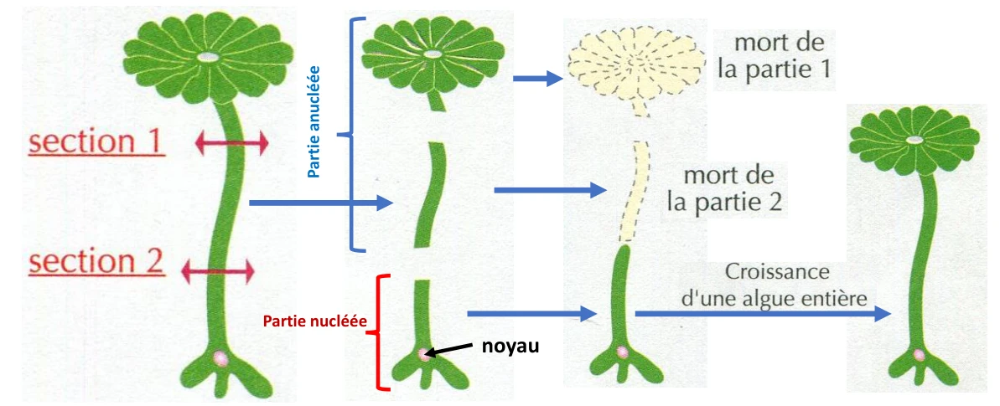
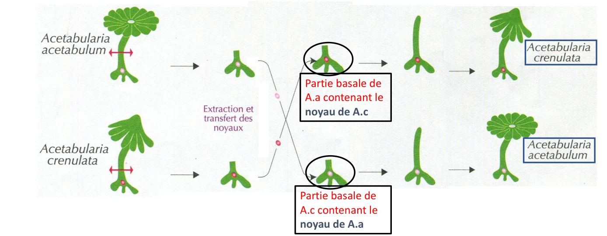

Où se trouve l’information génétique dans la cellule ?
La cellule œuf donne, par divisions successives, les cellules d’un individu. Son développement fait apparaître des caractères héréditaires. Ces caractères dépendent d’un programme appelé information génétique.
Objectifs : observer des résultats expérimentaux, proposer une hypothèse, la tester, puis construire une conclusion.
Tes réponses sont conservées sur ce navigateur si le stockage local est disponible. Elles ne sont pas envoyées au professeur.
Commencer l’activité ↓1. Observer la section de l’acétabulaire
L’acétabulaire est une algue unicellulaire constituée d’un chapeau, d’une tige et d’un rhizoïde. Son noyau est situé dans le rhizoïde. On sépare des fragments avec et sans noyau.

La partie nucléée régénère une algue entière. Les parties anucléées dégénèrent. Le noyau est donc nécessaire au développement de l’algue. On peut supposer qu’il contient l’information génétique.
Cette première expérience permet de formuler une hypothèse. Le transfert de noyaux permet ensuite de la tester.
Compare avec ta réponse et améliore-la si nécessaire. Cette comparaison n’est pas une notation automatique.
2. Tester l’hypothèse par une greffe croisée
On retire les noyaux des rhizoïdes de deux espèces : Acetabularia acetabulum (A.a) et Acetabularia crenulata (A.c). Chaque rhizoïde reçoit ensuite le noyau de l’autre espèce.

Le rhizoïde d’A.a recevant le noyau d’A.c régénère un chapeau d’A.c. Réciproquement, le rhizoïde d’A.c recevant le noyau d’A.a régénère un chapeau d’A.a.
La forme du chapeau suit donc l’origine du noyau transféré. Le noyau contient l’information génétique déterminant ce caractère.
Compare avec ta réponse et améliore-la si nécessaire. Cette comparaison n’est pas une notation automatique.
3. Exploiter le transfert nucléaire chez la souris
Une cellule œuf issue de souris blanches est énucléée. Elle reçoit le noyau d’une cellule œuf issue de souris noires. L’embryon obtenu est implanté dans l’utérus d’une mère porteuse.

Les souriceaux ont un pelage noir, comme les souris à l’origine du noyau transféré, alors que la cellule receveuse provient de souris blanches.
Le résultat montre que l’information déterminant le caractère étudié se trouve dans le noyau. La mère porteuse assure le développement de l’embryon dans son utérus.
Compare avec ta réponse et améliore-la si nécessaire. Cette comparaison n’est pas une notation automatique.
4. Identifier les constituants du noyau

Le noyau présente une enveloppe nucléaire percée de pores nucléaires, un ou plusieurs nucléoles et de la chromatine. La chromatine est un ensemble de nucléofilaments.
Compare avec ta réponse et améliore-la si nécessaire. Cette comparaison n’est pas une notation automatique.
5. Distinguer les types cellulaires
Une cellule animale et une cellule végétale possèdent un noyau délimité par une enveloppe. Une bactérie possède de l’ADN, mais sans enveloppe nucléaire autour de cet ADN.
Les cellules animales et végétales sont eucaryotes : elles possèdent un noyau délimité par une enveloppe nucléaire. Les bactéries sont procaryotes : elles possèdent de l’ADN, mais pas de noyau délimité.
L’absence de noyau ne signifie donc pas l’absence d’information génétique.
Compare avec ta réponse et améliore-la si nécessaire. Cette comparaison n’est pas une notation automatique.
6. Définir l’interphase
Au cours des divisions successives, une cellule passe par une interphase puis une mitose. La mitose aboutit à deux cellules filles.
L’interphase est l’intervalle de temps qui sépare deux mitoses successives. La cellule reste active : elle se développe et prépare notamment sa division.
Compare avec ta réponse et améliore-la si nécessaire. Cette comparaison n’est pas une notation automatique.
Construire le bilan
Les expériences sur l’acétabulaire et la souris montrent que le noyau contient l’information génétique déterminant les caractères étudiés chez ces eucaryotes.
Approfondir dans les compléments →Après cette activité, retrouve le quiz Info1 dans Quiz SVT depuis Mon Espace SVT.
← Retour au travail à faire